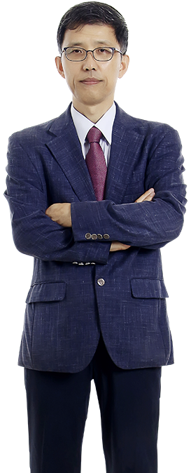

-
대한의사협회
회원전용 자문세무법인병의원 절세와 세무안전을 책임집니다

국세청 33년 경력
믿고 맡길 수 있는 신승세무법인
-
비교불가
병의원에 특화된 탁월한 전문성으로 병의원 세무혁신 스마트 경영지원서비스를 지원해드립니다
-
쉽고 편한 세무상담센터
언제 어디서나 클릭 한번으로 연결되는 스마트한 세무상담센터를 만나보세요
국세청 33년 경력
믿고 맡길 수 있는 신승세무법인
- 쉽고빠른
- 세무상담
- 증빙자료
- 전송가능
MEDICAL
TAX-CARE
SYSTEM
병의원 세무안전 검증 & 절세 병의원 전문 세무사가 직접 책임지고 도와드립니다
-
병의원 전문 세무지원
- 병의원 전문 세무전문가 전담 배정
- 병의원 장부 (월별 / 분기별) 기장 서비스
- 병의원 분기별 결산 & 손익보고 서비스
- 병의원 법인세, 소득세 신고, 조정 서비스
- 병의원 직원 급여, 상여 및 퇴직금 아웃소싱 서비스
- 병의원 노무 & 4대보험 관리 서비스
-
병의원 세무안전 점검
- 국세청 실무담당 출신 세무사 1:1 배정
- 세무조사 예방 사전점검 서비스
- 국세청 매뉴얼 기준 병의원 모의 세무조사 서비스
- 국세청 세무조사 대응 밀착 서비스
- 병의원 세무진단 서비스
- 병의원 특화 세무분석보고 서비스
-
병의원 스마트 세무경영지원
- 인공지능 AI 도입 매출 매입 손익 실시간 안내
- 실시간 세무 업무 진행상황 및 신고결과 안내
- 맞춤 세무 & 노무 & 마케팅 채팅상담 지원
- 카드 매출 입금 실시간 안내 및 카드매출 누락 알림
- 세무자료 자동 수집 및 증빙 자동 관리
- 민원/증명서류 초스피드 간편발급 시스템
- 병의원 마케팅 비용대비 효과 분석 서비스
-
절세 컨설팅
- 프리미엄 절세 컨시어지 서비스
- 병의원 자산관리 전략 컨설팅
- 양도/상속/증여 컨설팅
- 병의원 신고자료 분석 절세방안 제안
- 경비 과부족 해결방안 제시
- 사업용 계좌 관리 및 활용방안 제시
- 병의원 중국진출 & 중국 세무컨설팅
TAX SEMINAR
- 중국기업 실무자
한국세무세미나 -
황재윤 대표세무사
중국기업 실무자 한국세무 세미나양해운 대표세무사
실무 재산제세 세미나
- EP01. 1세대 1주택 비과세 개념정리
- EP02. 1세대 1주택 비과세 (주택의 개념 및 1주택 판단)
- EP03. 1세대 1주택 비과세 조건
- EP04. 1세대 1주택 비과세 특례
- EP05. 다주택자 중과세
- EP06. 비사업자용 토지
- EP07. 상속세 & 증여세 개념정리
- EP08. 사전증여 개념정리
- EP09. 상속세 & 증여세 공제
- EP10. 상속세 & 증여세 재산평가
- EP11. [핵심요약] 1세대 1주택 비과세
- EP12. [핵심요약] 1세대 1주택 비과세 (1주택 판단)
절세꿀팁
-
창업자를 위한 절세꿀팁
인테리어를 포함한 초기 투자비용이 높은 경우 일반과세자로 등록해야 초기 비용에 대한 세금계산서를 발급받아 매입세액공제를 받을 수 있습니다. 특히, 일반과세자는 창업 초기 인테리어비용에 대해 부가가치세 조기환급제도를 이용할 수도 있습니다.
권리금도 처음 계약할때 잘 정리해두어야 손해가 없는데, 시설권리금을 주는 경우 꼭 세금계산서를 받고 줘야 하고, 바닥권리금은 기타소득세 8.8%를 원천징수 후에 지급하고 신고해야만 감가상각을 받아 절세 할 수 있습니다.#창업 #절세 #창업세무 #권리금
-
1가구 2주택 양도소득세 면제조건
이사를 위해 일시적 1가구 2주택이 된 경우
해당 기간 내 기존주택을 매도하게 되면 비과세를 받을 수 있습니다. 단, 9억 원을 초과하는 고가주택은 초과된 금액만큼 과세가 적용됩니다.
결혼하면서 1기구 2주택이 된 경우
혼인신고일 기준 5년 이내 한 주택을 처분할 경우, 먼저 처분한 주택의 1가구 2주택 세금을 면제받을 수 있습니다. 더불어 60세 이상 노부모 부양 합가로 인한 1가구 2주택 양도소득세 면제조건은 10년 이내 주택을 팔면 해당이 될 수 있습니다.
상속으로 1가구 2주택이 된 경우양도세 #양도소득세 #1가구2주택 #비과세
-
상속세 낼 것도 없어도 신고하는게 절세노하우
일반적으로 배우자가 있고 자녀가 있는 경우 상속재산 10억원까지는 전액 공제가 되므로 상속세 신고조차 하지 않는 경우가 대부분입니다. 그런데, 시간이 지나 상속 재산을 처분해야 하는 경우가 생기면 상속세를 신고하지 않아 양도소득세를 많이 내야 하는 경우가 있습니다. 이는 세무서는 상속재산에 대해 별도 신고를 하지 않은 경우 상속 당시 기준시가를 취득가액으로 보는데, 파는 가격은 실거래가액이다보니 그격차가 너무 커져서 발생하는 경우로 상속세를 낼 필요가 없는 경우라도 감정평가를 해 감정가액으로 상속세를 신고를 하면 미래의 양도세를 아낄 수 있습니다.
#상속세 #상속세신고 #양도소득세
상담사례
-
사망보험금을 수령하였는데 상속세 과세대상에 해당하나요?
피상속인의 사망으로 인하여 지급받는 생명보험이나 손해보험 등의 보험금으로서 피상속인이 보험계약자이거나 실질적으로 보험료를 불입한 보험계약에 의하여 지급받는 경우 이를 상속재산으로 보아 상속세를 부과합니다.
- 상속세 과세대상 보험금 (상증법 8조)
다만, 보험료 계약자, 불입자, 피보험자, 보험금 수익자에 따져 상속세, 증여세로 구분되어집니다.#상속세 #사망보험금
-
상속개시 전에 증여받은 재산도 상속세 계산할때 합산하나요?
5년 이내에 상속인 이외의 자에게 증여한 재산은 상속세 과세가액에 가산하여 상속세를 계산합니다.
피상속인이 생전에 재산을 상속인 등에게 분할하여 증여함으로써 상속세의 누진세 부담을 회피하는 것을 방지하기 위해서입니다.
이미 납부한 증여세는 일정 한도 내에서 상속세 산출세액에서 공제합니다.#상속세 #사전증여 #증여재산 #증여재산합산
-
다가구주택은 어떻게 비과세를 판정하나요?
다가구주택은 원칙적으로 한 가구가 독립하여 거주할 수 있도록 구획된 부분을 하나의 주택으로 봅니다.
다만, 해당 다가구주택을 구획된 부분별로 양도하지 않고 하나의 매매단위로 하여 양도하는 경우에는 그 전체를 하나의 주택으로 보아 1세대 1주택 비과세를 판정하고, 양도가액 9억원을 초과하는 고가주택에 해당하는지 여부 또한 전체 양도가액을 기준으로 판단합니다.#상속세 #사망보험금
Q
A
병원에만 전념하세요
신승세무법인이 함께 합니다
신승세무법인은 전문성과 노하우를 바탕으로 병의원 세무관련 예상납부세액, 세금신고, 세금내역은 물론 병원 경영에 필요한 많은 정보를 제공하고, 업무 소통을 빠르고 편리하게 도와드립니다.
신승세무법인 지점안내
글로벌 세무전문 그룹 신승세무법인 수도권 15개 지점
- 강남본사MAP
- 부천지점MAP
- 용인지점MAP
- 광주지점MAP
- 안양지점MAP
- 분당지점MAP
- 수원지점MAP
- 기흥지점MAP
- 일산지점MAP
- 신사지점MAP
- 용산지점MAP
- 안산지점MAP
- 안산법원지점MAP
- 시흥지점MAP
- 시흥정왕지점MAP
신승 세무법인 세무사
신승 세무법인의 대표 세무사는 평균 20년 이상 경력의 숙련된 전문가로 구성되어 있습니다
- 대표세무사양해운
- 대표세무사황재윤 대표세무사변기영
- 대표세무사전명호 대표세무사박호열
- 회계사오종석 회계사안장순
- 주식평가전문송광호 중국세무전문심지현
- 양도세전문이인준 상속세전문유수현
대표세무사
양해운
저서
국세청경력
41년대표세무사
황재윤
국세청경력
27년대표세무사
변기영
세무컨설팅
20년대표세무사
전명호
국세청경력
38년
대표세무사
박호열
국세청경력
33년

공인회계사
국제조세 & 해외 세무신고 자문
고려대학교 경제학 전공
서울대학교 대학원 경영학 석사
중국인민대학교 경제학 박사
국내/해외 M&A 및 투자인수 자문
세무진단, 세무조사, 세무자문
세무회계컨설팅 22년 경력
회계사
오종석
회계컨설팅
22년
회계사
안장순
회계컨설팅
20년
세무사
송광호
주식평가
전문

세무사
심지현
중국세무
전문
세무사
이인준
양도세
전문

세무사
유수현
상속세
전문
번거롭고 복잡한 병의원 세무업무를 책임져드립니다
20여년 노하우를 갖춘 70여명의 세무회계 및 경영컨설팅 전문가와 함께 하세요
신승차이나컨설팅
한중 NO.1 중국관련 원스톱 기업지원센터 운영
한국기업 중국진출 컨설팅 & 중국기업 한국투자 컨설팅
중국 선도 컨설팅 그룹 UNI-TAX Korea Member Firm
중국 23개 지역 지사 네트워크 인프라 구축
- 중국진출/한국투자
컨설팅 - 중국경영컨설팅
한국법인설립지원 - 중국세무/한국세무
컨설팅 - 중국법률/한국노무
컨설팅 - 중국마케팅/한국마케팅
컨설팅
- 신승세무법인 브로셔 PDF 다운로드
- 절세칼럼 & 상담사례집 PDF 다운로드
- 신승차이나 브로셔 국문 PDF 다운로드 중문 PDF 다운로드